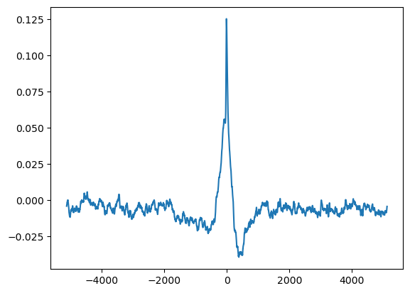
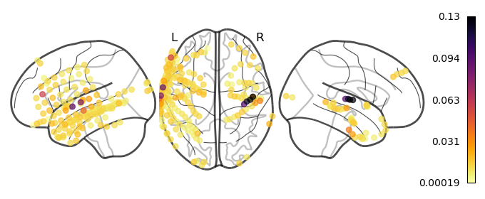
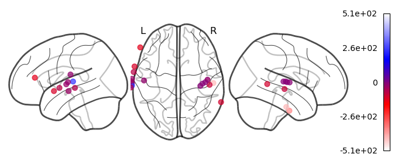

Audio-ECoG cross-correlation¶
This is a quality control check to see if A1 electrodes respond to the audio envelope
[1]:
import mne
import numpy as np
import pandas as pd
import matplotlib.pyplot as plt
from nilearn.plotting import plot_markers
from mne_bids import BIDSPath
from scipy import signal
from scipy.io import wavfile
from scipy.signal import convolve, correlate, correlation_lags, windows
[2]:
def xcorr(
x: np.ndarray,
y: np.ndarray,
smooth_win=None,
mode="full",
method="fft",
norm=True,
maxlags=None,
rank=False,
):
"""General function to compute cross correlation using scipy
This function will center the data and normalize it by default.
"""
# Rank transform
if rank:
x = x.argsort().argsort()
y = y.argsort().argsort()
# Center
x = x - x.mean()
y = y - y.mean()
# Correlate
corr = correlate(x, y, mode=mode, method=method)
lags = correlation_lags(x.size, y.size, mode=mode)
if norm:
corr /= np.sqrt(np.dot(x, x) * np.dot(y, y))
if maxlags is not None:
middle = (lags == 0).nonzero()[0].item()
lags = np.arange(-maxlags, maxlags + 1)
corr = corr[middle - maxlags : middle + maxlags + 1]
# Smooth the correlations
# look at https://scipy-cookbook.readthedocs.io/items/SignalSmooth.html
# to get rid of edge effects
if smooth_win is not None:
win = windows.hamming(smooth_win)
corr = convolve(corr, win, mode="same") / sum(win)
return corr, lags
def preprocess_highqa(x, fs, to_fs, lowcut=200, highcut=5000):
# See https://scipy-cookbook.readthedocs.io/items/ButterworthBandpass.html
def butter_bandpass(lowcut, highcut, fs, order=5):
nyq = 0.5 * fs
low = lowcut / nyq
high = highcut / nyq
b, a = signal.butter(order, [low, high], btype="band")
return b, a
def butter_bandpass_filter(data, lowcut, highcut, fs, order=5):
b, a = butter_bandpass(lowcut, highcut, fs, order=order)
y = signal.lfilter(b, a, data)
return y
assert x.ndim == 1
# x = x[:fs * round(len(x) / fs)] # trim to nearest second
# Step 1. Bandpass the high quality audio
y = butter_bandpass_filter(x, lowcut, highcut, fs, order=5)
# Step 2. Downsample to same freq as clinical system
# Number of new samples is N = n * (to_fs / fs)
y = signal.resample(y, num=round(x.size / fs * to_fs))
# Step 3. Take audio envelope
envelope = np.abs(signal.hilbert(y - y.mean()))
return envelope
[3]:
sfreq = 512
audio_path = "../monkey/stimuli/monkey.wav"
highfs, highqa = wavfile.read(audio_path)
if highqa.ndim > 1:
highqa = highqa[:, 0] # take first channel
highenv = preprocess_highqa(highqa, highfs, sfreq)
/tmp/ipykernel_4025037/3757069057.py:3: WavFileWarning: Chunk (non-data) not understood, skipping it.
highfs, highqa = wavfile.read(audio_path)
[4]:
edf_path = BIDSPath(root="../monkey/derivatives/ecogprep", datatype="ieeg", extension=".fif")
edf_paths = edf_path.match()
# hacky way just to get highgamma since `desc` doesn't work
edf_paths = [path for path in edf_paths if 'highgamma' in str(path)]
len(edf_paths)
[4]:
8
[5]:
raw = mne.io.read_raw_fif(edf_paths[1])
raw
Opening raw data file ../monkey/derivatives/ecogprep/sub-02/ieeg/sub-02_task-monkey_desc-highgamma_ieeg.fif...
Range : 0 ... 921599 = 0.000 ... 1799.998 secs
Ready.
[5]:
General
| Measurement date | March 11, 2019 10:54:21 GMT |
|---|---|
| Experimenter | Unknown |
| Participant | sub-02 |
Channels
| Digitized points | 189 points |
|---|---|
| Good channels | 186 ECoG |
| Bad channels | None |
| EOG channels | Not available |
| ECG channels | Not available |
Data
| Sampling frequency | 512.00 Hz |
|---|---|
| Highpass | 70.00 Hz |
| Lowpass | 200.00 Hz |
| Filenames | sub-02_task-monkey_desc-highgamma_ieeg.fif |
| Duration | 00:29:60 (HH:MM:SS) |
[6]:
data = raw.get_data()
data.shape
[6]:
(186, 921600)
[8]:
data = data[184:185]
data.shape
[8]:
(1, 921600)
[9]:
all_corrs = []
for i in range(len(data)):
corrs, lags = xcorr(highenv, data[i], maxlags=10*512)
all_corrs.append(corrs)
[10]:
all_corrs = np.stack(all_corrs)
all_corrs.shape
[10]:
(1, 10241)
[7]:
raw.info['ch_names'][184]
[7]:
'DRPI3'
[11]:
plt.plot(lags, all_corrs.mean(0))
[11]:
[<matplotlib.lines.Line2D at 0x148cdd61cb90>]

[21]:
best_elec = all_corrs.max(-1).argmax()
best_elec
[21]:
184
[23]:
plt.plot(lags, all_corrs[best_elec])
[23]:
[<matplotlib.lines.Line2D at 0x14c63164f280>]
[13]:
ch2loc = {ch['ch_name']: ch['loc'][:3] for ch in raw.info['chs']}
coords = np.vstack([ch2loc[ch] for ch in raw.info['ch_names']])
coords *= 1000 # nilearn likes to plot in meters, not mm
coords.shape
[13]:
(186, 3)
[20]:
values = all_corrs.max(-1)
order = values.argsort()#[::-1]
plot_markers(values[order], coords[order],
node_size=30, display_mode='lzr',
node_cmap='inferno_r', colorbar=True)
plt.show()

[56]:
values = all_corrs.max(-1)
np.percentile(values, 90)
[56]:
0.01887601501996835
[58]:
mask = values >= .02
mask.sum()
[58]:
17
[39]:
from matplotlib.colors import LinearSegmentedColormap
cmap = LinearSegmentedColormap.from_list('wrw', ["white", "red", "blue", "white"], N=256)
cmap
[39]:
wrw

under
bad
over
[60]:
values = lags[all_corrs.argmax(-1)]
plot_markers(values[mask], coords[mask],
node_size=40, display_mode='lzr',
node_cmap=cmap, colorbar=True, node_vmin=-512, node_vmax=512)
plt.show()
